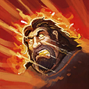

E.T.C.
Welcome to our E.T.C. guide for Heroes of the Storm. Here you will learn everything you need to know in order to play E.T.C. in a competitive environment, whether you play on your own or with a team.
Balanced Build
| Level 1 | Level 4 | Level 7 | Level 10 | Level 13 | Level 16 | Level 20 |
|---|---|---|---|---|---|---|
|  |  |
This Balanced Build seeks to provide E.T.C with a healthy mix of offense, defense, and crowd control. Key aspects of the build lie in greatly improving the disruption potential of Face Melt Icon Face Melt, and in improving E.T.C.'s generally abysmal waveclear through the Echo Pedal Icon Echo Pedal. Though Mosh Pit Icon Mosh Pit is suggested as a Heroic Ability, Stage Dive Icon Stage Dive is a valid choice as well.
Go Back